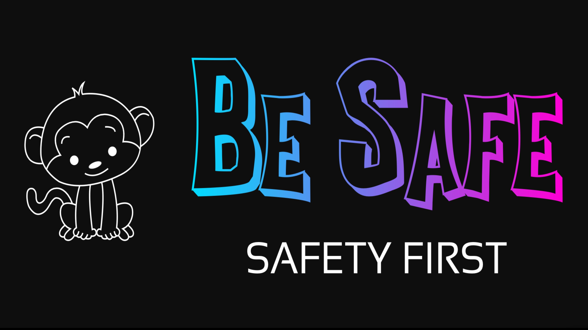

Learn more about us at BeSafe.
My name is Navita Sivakumar, and I am a rising junior. I’m 16 years old and I attend Middlesex County Academy for Allied Health and Biomedical Sciences in Woodbridge. Working on this project was really rewarding. We came up with this idea because we believe that our world is becoming more advanced but more dangerous as well. Teaching children who are the future necessary safety skills is absolutely essential to help them in unexpected situations. We also wanted to be able to educate parents on how to teach their kids on certain safety topics in a fun but educational way. As a result, this website of games and information on safety came to life.
My name is Kyla Greene, and I am a rising junior. I’m 15 years old and I attend County Prep High School in Jersey City. I chose to work on this project because I believe that children are our future and that it is something we have to protect by teaching kids necessary survival skills. Not many children are taught how to stay safe in a state of emergency or what safety is for that matter, so with our website and games, we will hopefully help them in an educational and fun way.
My name is Shianne Mohammed, and I am a rising senior. I’m 17 years old and I attend Liberty High School in Jersey City. I chose to work on this project because stranger danger is a real and important thing to be aware of. It isn’t spoken about a lot so through this website we hope to inform kids of the importance of their safety and what to do in these unexpected but real situations.
My name is Da'Shnay Sharrock, I am 16 years old and as of 2019 I am a rising Junior. This website was created to inform parents and or guardians on the importance of stressing a safety guide on children at a young age so that it stays with them for years to come. I truly believe we did just that. I personally chose to work on 'Be Safe' as a project because I feel as though so many people go uninformed when it comes to basic emergency situations and it’s very important to know as much as you can in the world we live in today.